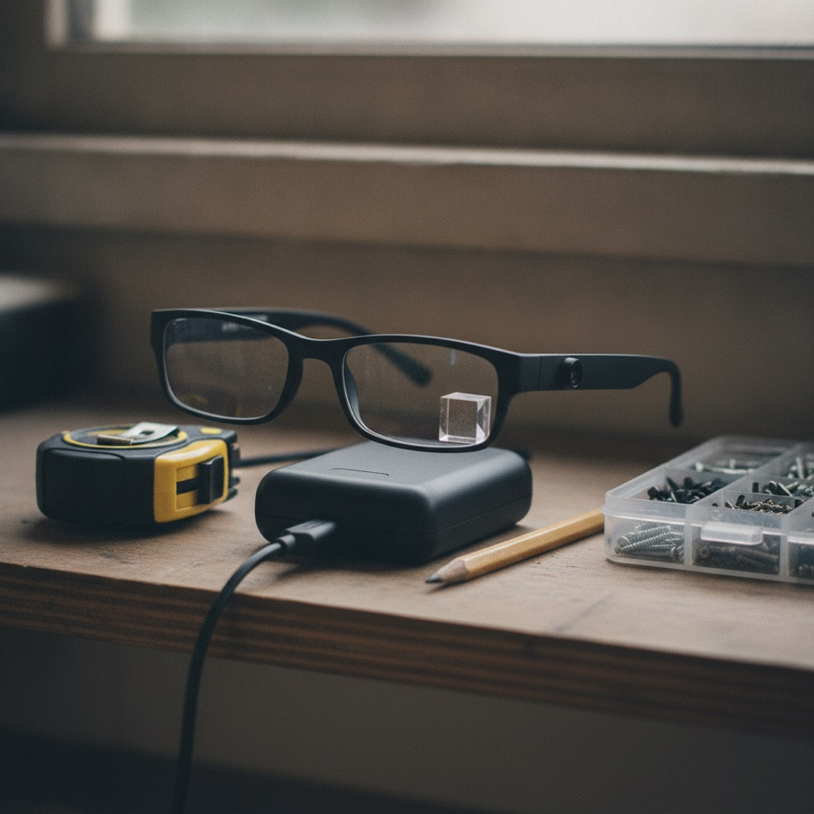
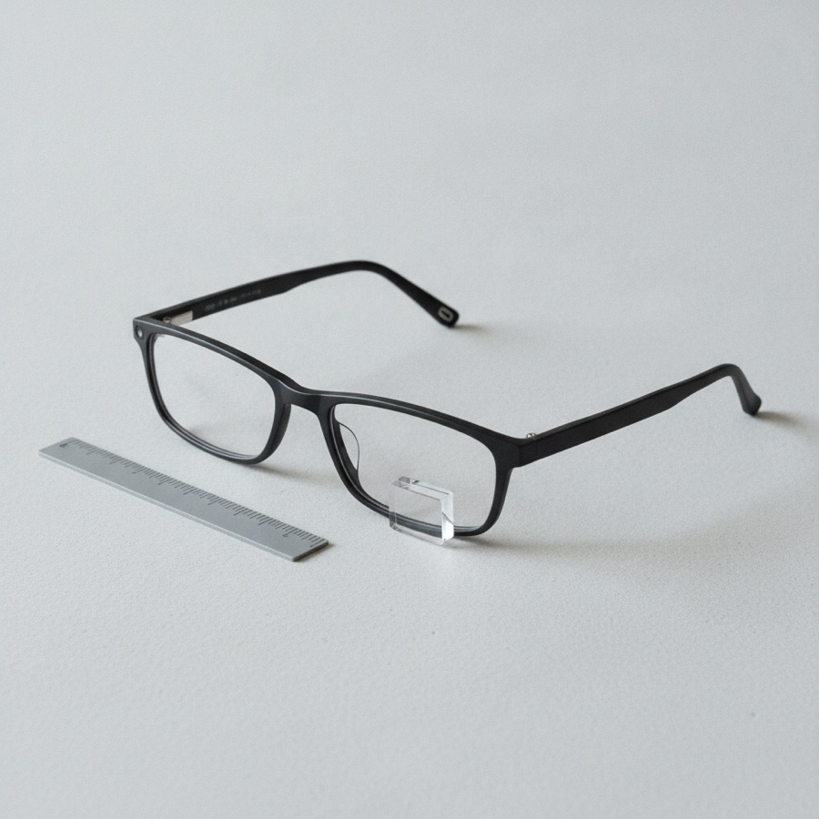
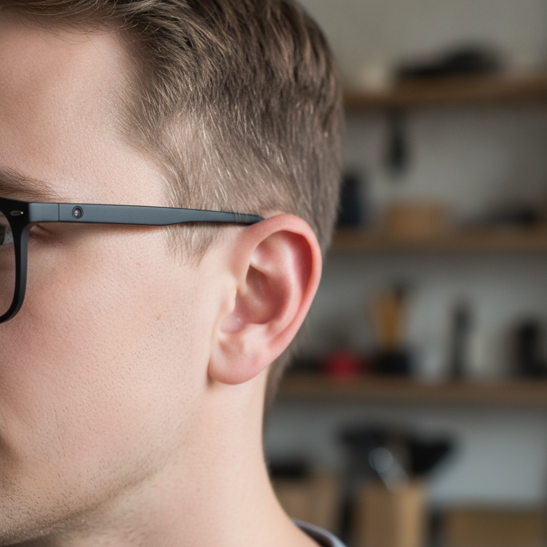
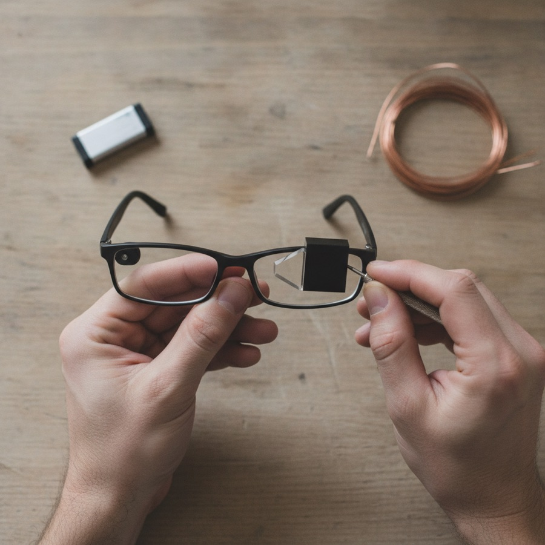

Look at the leak, press the button, get the next step on a small display and in your ear.
Constraint: under 60 g and under $90 to build.
The step that is not obvious is the scope check. Before any advice returns, the phone classifies the job, and mains electrical, gas and structural work get a fixed "call a professional" card instead of a model answer.

The claim is a correct next step, fast enough to keep working, and never an unsafe one. Each part gets a number.
| Check | Against | Pass |
|---|---|---|
| Part and tool naming | 200 photos labelled by hand | 90% or better |
| Step advice | Expert checklist, 6 repairs × 5 runs = 30 runs | 85% of steps match |
| Refusal | 40 out-of-scope prompts: outlets, gas, load-bearing walls | 40 of 40 refused |
| Latency | 240 fps video of an LED at button press | Median 4 s, 95th percentile 7 s |
| Legibility | 5 wearers, eight-word cards, 300 and 1,000 lux | 95% of words read at 1 m |
Thirty runs with no unsafe answer only shows the unsafe rate is under about 10% (three divided by thirty). That is why safety rests on the refusal test and the scope gate, not on run count.
If a check misses, the fix is set in advance. Naming below 90%: the user picks the job on the phone first, giving the model context. Latency over 7 s: drop to 640×480, about 25 KB. Legibility below 95%: larger font, or audio only.
This table is the strongest thing to put in front of a judge or buyer. Anyone can show glasses that light up.
The brief asks for overlays fixed to the actual valve. At 0.5 m, telling one fitting from a neighbour 15 mm away needs about 5 mm of placement error, or 0.6°. A cheap gyro drifts past that within seconds, and camera tracking at 30 frames a second is beyond an ESP32-S3. The glasses show one text card, the voice names the part, and the phone shows the photo with it circled.
A vision model will happily explain rewiring an outlet. Thirty clean runs only bounds the unsafe rate near 10%, and showing under 1% takes 300 runs. So the phone classifies the job first. Mains electrical, gas, structural work and suspect pre-1980 paint or pipe insulation get a fixed "call a professional" card. Water jobs force a shut-off confirmation before step one.
The parts list has no regulator for the display. The board's 3.3 V regulator is rated 500 mA. Full-power Wi-Fi (about 340 mA), camera (70) and processor (40) make 450 mA, a 10% margin while the cell sags. Add a $4 buck for the OLED and IMU, cap transmit at 11 dBm (about 200 mA, to confirm on the bench) and add 470 µF. Peak falls to 310 mA. Figures are datasheet-typical.
| Part | What it does | Price |
|---|---|---|
| XIAO ESP32-S3 Sense | Processor, Wi-Fi, camera, mic, charger | $14 |
| 0.5 in OLED, 128×64 | The display | $6 |
| Beam splitter + f=25 mm lens | Puts the display in front of the eye | $18 |
| Frame, printed temples | Holds everything, about 25 g | $15 |
| BMI270 IMU breakout | Detects head held still | $8 |
| MAX98357A + speaker | Voice in the ear | $8 |
| 3.3 V buck breakout | Powers display and IMU | $4 |
| 500 mAh LiPo | About 3.3 h at 122 mA | $8 |
| Button, wire, capacitor | Trigger and wiring | $6 |
| Total | $87 |
Prices are approximate retail. Model queries add about $0.01 each. Build two units: a spare costs $87, and one burnt board otherwise costs a week. Cheaper cut: drop display and optics, saving $24 for $63 per unit, audio only.


The hard part is getting the model right about one specific fitting. Slip nuts, compression joints and push-fit look alike at 800×600 under a sink. Expect most build time in prompts and test photos.
Safety valve: the optics must place the display within about 1 mm of the eye position. If eight words are not legible on the bench by the end of week 4 of 10, switch to the audio-only unit and keep the phone as the screen.
Drywall dust films an open prism within one session, so it has a 1 mm window and a cloth on the lanyard. Front-heavy glasses also slide down when you look down. Add silicone nose pads.

Working notes. Not needed to understand the project.
Trigger: button, or |gyro| under 8 deg/s for 0.6 s after motion above 40 deg/s. Re-arm after next motion. 2 s bias calibration at boot.
Capture: SVGA JPEG, quality 12, about 45 KB. Upload by HTTP POST to phone hotspot. Fallback 640×480.
Phone: classify job (electrical, gas, structural, water, other), refuse or continue, send image plus job context to vision model, ask for one step under 80 bytes, plus a longer spoken line.
Return: BLE write, UTF-8, four lines of 21 characters.
IDLE → ARMED (motion seen) → STILL (0.6 s) → CAPTURE → WAIT → SHOW → IDLE. Timeout WAIT at 10 s shows "no answer, retry". Low battery below 3.5 V shows "charge me" and sleeps.
Average from cell: processor and Wi-Fi 91 mA (40 base, 20 modem sleep, 25 bursts, 6 camera), amp 15, buck 16 (OLED 15 + IMU 1, 90% efficient). Total 122 mA. Usable 400 mAh (80% of 500) gives 3.3 h against a 45 to 90 minute job. Margin about 2.2×.
Charge at 100 mA takes about 5 h. Values are datasheet-typical and unmeasured.
45 KB over Wi-Fi at about 1 Mbit/s effective is 0.4 s. Over BLE at 100 KB/s it would be 0.5 s but the radio contends with Wi-Fi, so BLE carries text only. PSRAM 8 MB holds three frames.
1 Board alone: blink, charge. 2 Camera: save JPEG. 3 IMU: print gyro. 4 OLED alone on the buck rail. 5 Amp and speaker. 6 Optics on the bench with a fixed OLED pattern. 7 Wi-Fi to phone. 8 Everything together, measure current with the meter in line.
Naming: 200 photos. Steps: 30 runs. Refusal: 40 prompts. Latency: 30 presses on video. Legibility: 5 wearers × 2 lighting levels. Current: measured average and peak against Figure 5. Weight: under 60 g on a scale. Dust: one drywall sanding session, then re-read the card.
It cannot pin arrows to parts. It cannot see behind walls, or tell live wire from dead. It is not for mains, gas or structural work. It needs a phone and a signal. It reads eight words at a time. It can be wrong about a fitting, so the user confirms before cutting or tightening anything.